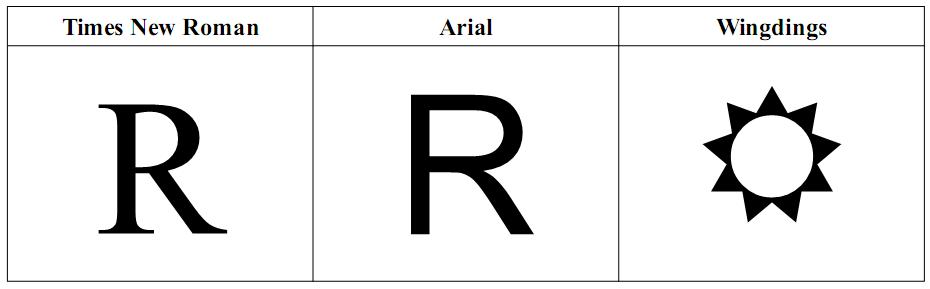
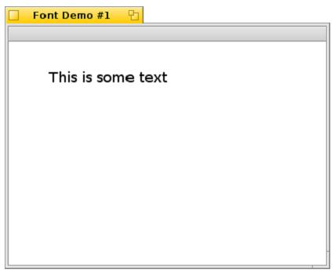

第十六课¶
字体是一些人需要重复温习的内容之一（那些毫无理由的收集了很多喜欢的东西人），其他人可能很少关心过这些东西。不管您站在那边，了解一下如何在 Haiku 中管理文本的显示也是非常有用的。
在 Haiku 中使用字体¶
与 Haiku 中其他的附加组件一样，用户可以在系统中用于保存字体的文件夹中添加自己喜欢的字体。您可以使用 find_directory()来获取，即 B_COMMON_FONTS_DIRECTORY，在 Haiku 中，其对应于 /boot/common/data/fonts，而对于 BeOS R5 和 Zeta，则为 /boot/home/config/fonts 。在 R5 和 Zeta 中，字体需要分别放入相应的子文件夹，ttfonts 用于 TrueType 字体，而 psfonts 则用于 PostScript。Haiku 移除了这一限制。当然 Haiku 中，在新安装完字体之后，您也不需要重启系统，可以直接使用。
相对于 BeOS R5 时代，字体的处理已经有了很大的改变。对于一些 BeOS 用户来说，文本渲染总是一块心病。R5 并没有提供文本抗锯齿处理。这种情况在 Zeta 中作了相应的提高，因为它使用了一种不同的字体引擎，由著名的字体公司 Bitstream 所开发。然而，这些提升仅能够用于 Zeta。对于 Haiku，则使用了开源的 FreeType 库提供优秀的字体渲染，并且提供了比之前更多类型的可用字体。
排版简介¶
如果在介绍字体时，对有关排版的背景不作介绍，它总是不完整的，排版是为各种类型的打印而作排布的过程。排版的基础起始于古登堡活版印刷，至今已经变得非常的复杂。当然在您的应用中使用文本，并不需要深入的掌握排版知识的所有细节，但是对一些术语的了解将会非常有用。
字体构成不同的字体集。字体集并不仅仅是一个名称。例如，Times New Roman，Century Schoolbook L，以及Helvetica都是非常有名的字体集。每个字体集都包含了一种或多种独立的样式或外观。虽然您可以很容易分辨出相似的斜体（Italic）和粗体（Bold），但是字体集并不是这个意思。有时候在讨论样式时，您会听到字号（Font Weight）这一术语。字号是样式的不同表示。下面是字号的不很详尽的列表，从最轻至最重的字体。
- Extra light
- Light
- Book
- Normal/Regular/Plain
- Medium
- Demi-bold
- Bold
- Black
- Extra Black
字体集通常分为不同的类别。使用的类别取决于您的要求，但是对于我们来说，我们使用三种基本类别：serif，sans serif，和 decorative。Serif 字体在拉丁文中最为常见。Serif 是处在在特定位置的字符的装饰笔画。而在 sans serif 字体中则没有这些装饰。Decorative 字体通常用于商标或者特殊效果。下面是大写字母R在三种不同字体中的表示：
Times New Roman 是一种 serif 字体，Arial 属于 sans serif字体，而 Wingdings 属于 decorative 字体。
除了上述的术语，您还需要了解一下的内容：
- 行距（leading） - 与单词 “bedding” 押韵，其用于指明文本两行之间的距离空间。
- 子模（glyph）- 字体中所使用的字符。根据字体的不同，它可以是字符，数字或者其他的内容。
- 字距（Kerning） - 两个字符之间的水平距离。等比例字体，字体没有固定的宽度，为了阅读的方便，在其字符之间使用了不同的字距。
- 基线（baseline） - 确定字符放置位置的虚拟线。
- 上格（ascender）- 表示位于其他字符上方的小写字符部分，例如字符 d 的上半部分。
- 下格（descender） - 位于基线以下的小写字符部分，例如字符 p 的下半部分。
- 点格（point）- 点格是计数单元，用于和像素相区别。在一个英寸上有72个点。（中国可以称之为字号，如初号对应于42 points，而八号对应于5 points）。
字体的处理¶
字体可能是一个复杂的内容，但是如果您只是希望在屏幕上打印出文本，您该怎么做呢？这不算个问题。让我们从最简单的示例说起：在 BView 中显示文本。
- 在 Paladin 中创建一个带有 GUI 和 Menu 模板的 Main Window 的项目。
- 打开 App.cpp，将该应用署名改为 “application/x-vnd.test-FontDemo1” 并保存。
- 新建文件 MainView.cpp，然后选中并创建其头文件。之后开始下面的任务。
MainWindow.cpp¶
#include “MainWindow.h”
#include <Application.h>
#include <Menu.h>
#include <MenuItem.h>
#include <View.h>
#include “MainView.h”
MainWindow::MainWindow(void)
: BWindow(Rect(100,100,500,400), “Font Demo”, B_TITLED_WINDOW,
B_ASYNCHRONOUS_CONTROLS)
{
BRect r(Bounds());
r.bottom = 20;
fMenuBar = new BMenuBar(r, “menubar”);
AddChild(fMenuBar);
r = Bounds();
r.top = 20;
MainView *view = new MainView(r);
AddChild(view);
}
void
MainWindow::MessageReceived(BMessage *msg)
{
switch (msg->what)
{
default:
{
BWindow::MessageReceived(msg);
break;
}
}
}
bool
MainWindow::QuitRequested(void)
{
be_app->PostMessage(B_QUIT_REQUESTED);
return true;
}
MainView.h¶
#ifndef MAINVIEW_H
#define MAINVIEW_H
#include <View.h>
class MainView : public BView
{
public:
MainView(const BRect &frame);
void Draw(BRect update);
}
#endif
MainView.cpp¶
#include “MainView.h”
MainView::MainView(const BRect &frame)
: BView(frame, “textview”, B_FOLLOW_ALL, B_WILL_DRAW)
{
}
void
MainView::Draw(BRect update)
{
// Draw 钩子函数在BView要求在屏幕上重绘自己时调用。
// 我们只是用一些代码来绘制文本。
BFont font;
font.SetSize(18.0);
SetFont(&font);
// DrawString 是用BView的当前字体设置，绘制模式，以及
// 颜色来绘制文本。需要注意的是指定的点为基线的最左端，
// 因此和其他内容的绘制相比，文本绘制位置需要一些推演。
DrawString(“This is some text”, BPoint(50,50));
}
上述的实例可能已经是最简单的了。运行这个演示程序，其窗口结果如下：
BView 的 Draw() 方法并不仅限于绘制文本，但是我们在这里不再赘述，留与其他课程。在这里需要注意，MainView 类得图形状态仅当我们修改时才会发生变化，例如打开位置，字体大小，当前高亮颜色等等。如果这样，我们可以将除 DrawString() 调用之外的其他内容转移至构造函数以使绘制更加快速，但是这种优化仅适用于简单的控件。
可用的内容¶
如果您快速的浏览一下Font.h文件，您会发现BFont类有很多不同的方法。其中很大部分都用于特殊用途，例如选择不同编码，翻转文本。下面我们将介绍您最常用的方法：
void GetHeight(font_height *height) const;
获取字体的行距，最大上格高度，和最大下格大小，并且包括当前字体的大小的像素。font_height 只是一个包含三个浮点数的结构体（struct）：ascent，decent，和leading。如果您希望了解使用该字体打印一行文本的安全像素高度，则调用该函数，然后将这三个值加起来即可。
void TruncateString(BString *string, uint32 mode, float maxWidth);
该方法从字符串中获取字符，直到其到达 maxWidth 像素。其具有四种模式：B_TRUNCATE_BEGINNING，B_TRUNCATE_MIDDLE，B_TRUNCATE_END，及B_TRUNCATE_SMART。前三个模式非常容易明白。根据 Be Book，最后一个必须与 GetTruncatedStrings() 一起使用，以便剪切字符串，使他们能够各不相同，并且关注字符边界，分隔符，标点符号等。在 R5 中，其并未实现。Haiku 中，其实现方式与 B_TRUNCATE_MIDDLE 相同。
bool IsFixed(void) const;
如果字体为等快字体，则返回真。
void SetFace(uint16 face);
uint16 Face(void) const;
设置或者获取字体外观。除了字符值，这些调用还有赖于整型常量，如果您希望指定某种样式且不希望了解其名称，将会非常方便。下面是外观常量：
- B_ITALIC_FACE
- B_UNDERSCORE_FACE
- B_NEGATIVE_FACE
- B_OUTLINED_FACE
- B_STRIKEOUT_FACE
- B_BOLD_FACE
- B_REGULAR_FACE
- B_CONDENSED_FACE*
- B_LIGHT_FACE*
- B_HEAVY_FACE*
带有 * 号得 CONDENSED，LIGHT，HEAVY 外观常量是 Haiku 所新添的，在 Zeta 或者 BeOS R5 中不可用。
void SetFamilyAndFace(const font_family family, uint16 face);
void SetFamilyAndStyle(const font_family family, const font_style style);
void SetFamilyAndStyle(font_family *family, font_style *style);
这三个方法可以方便的获取和设置指定字体样式。
void SetSize(float size);
float Size(void) const;
设置字体的点格（Point）大小。在本书编写时，Be Book 对其限制为 1000 points，而 Haiku 与其不同，并没有该限制。
float StringWidth(const char* string) const;
float StringWidth(const char* string, int32 length) const;
返回当前大小字符串的宽度。
int32 count_font_families(void);
int32 count_font_styles(font_family family);
status_t get_font_family(int32 index, font_family* family, uint32* flags = NULL);
status_t get_font_style(font_family family, int32 index, font_style* style, uint32* flags = NULL);
用于迭代读取系统中安装的所有字体的全局函数。